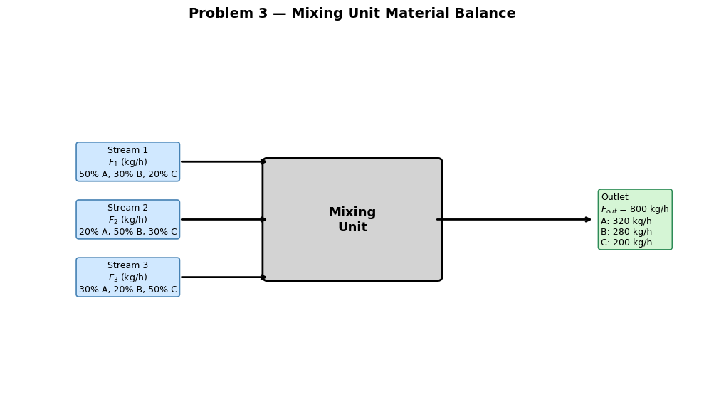

Homework 05: NumPy Arrays and Linear Algebra#
Release Date: Mar 8
Due Date: Mar 27 11:59 PM
Total Points: 80 pts
Instructions:
Complete all problems in this notebook
Show all your work with clear comments
Use NumPy arrays for all calculations
Format all outputs professionally with units
Test your code to ensure it runs without errors
Submission:
Submit this completed Jupyter notebook to Gradescope
Make sure all cells have been executed and outputs are visible
Problem 1 (30 points) – Temperature Profile in a Reactor#
A tubular reactor has temperature measurements at 8 equally-spaced positions along its length (\(L\) = 10 m). The temperatures (in K) are stored in a NumPy array:
temperatures = np.array([450, 475, 490, 510, 525, 515, 495, 470])
Tasks:
a) (5 pts) Calculate and print:
Mean temperature
Maximum temperature and its position (index)
Minimum temperature and its position (index)
Temperature range (max - min)
b) (5 pts) Find all positions where the temperature exceeds 500 K using NumPy boolean indexing.
c) (10 pts) Calculate the temperature gradient (temperature difference between consecutive positions):
Print the gradient array and identify where the largest temperature drop occurs.
d) (10 pts) Normalize the temperature array to a 0-1 scale using: $\(T_{norm} = \frac{T - T_{min}}{T_{max} - T_{min}}\)$
Print the normalized array and verify that the minimum value is 0 and maximum is 1.
This dimensionless temperature maps each position to “how far along it is between the coldest and hottest point in the reactor” — where 0 corresponds to the coldest location and 1 to the peak temperature. This is physically useful for comparing the shape of temperature profiles across reactors with different absolute temperatures, and the same form appears naturally as a boundary condition in analytical solutions to the heat equation.
Problem 2 (20 points) – Material Balance using Linear Algebra#
A mixing unit receives three feed streams and produces one outlet stream. The mass flow rates and compositions must satisfy material balances.
Given:
Stream 1: Flow rate F₁ (kg/h), composition: 50% A, 30% B, 20% C
Stream 2: Flow rate F₂ (kg/h), composition: 20% A, 50% B, 30% C
Stream 3: Flow rate F₃ (kg/h), composition: 30% A, 20% B, 50% C
Outlet specifications:
Total flow rate: 800 kg/h
Component A: 320 kg/h
Component B: 280 kg/h
Run this for visualization:
import matplotlib.pyplot as plt
import matplotlib.patches as mpatches
from matplotlib.patches import FancyArrowPatch
fig, ax = plt.subplots(figsize=(10, 6))
ax.set_xlim(0, 10)
ax.set_ylim(0, 10)
ax.axis('off')
# ── Mixing box ────────────────────────────────────────────────────────────────
box = mpatches.FancyBboxPatch((3.8, 3.5), 2.4, 3.0,
boxstyle="round,pad=0.1",
linewidth=2, edgecolor='black',
facecolor='lightgray')
ax.add_patch(box)
ax.text(5.0, 5.0, 'Mixing\nUnit', ha='center', va='center',
fontsize=13, fontweight='bold')
# ── Helper: draw an arrow ─────────────────────────────────────────────────────
def arrow(ax, x1, y1, x2, y2):
ax.annotate('', xy=(x2, y2), xytext=(x1, y1),
arrowprops=dict(arrowstyle='->', lw=2, color='black'))
# ── Feed streams (left side) ──────────────────────────────────────────────────
stream_data = [
(1, 6.5, 'Stream 1\n$F_1$ (kg/h)\n50% A, 30% B, 20% C'),
(1, 5.0, 'Stream 2\n$F_2$ (kg/h)\n20% A, 50% B, 30% C'),
(1, 3.5, 'Stream 3\n$F_3$ (kg/h)\n30% A, 20% B, 50% C'),
]
for (x_start, y_start, label) in stream_data:
arrow(ax, x_start + 1.5, y_start, 3.8, y_start)
ax.text(x_start + 0.75, y_start, label, ha='center', va='center',
fontsize=9, bbox=dict(boxstyle='round,pad=0.3',
facecolor='#d0e8ff', edgecolor='steelblue', lw=1.2))
# ── Outlet stream (right side) ────────────────────────────────────────────────
arrow(ax, 6.2, 5.0, 8.5, 5.0)
ax.text(8.6, 5.0,
'Outlet\n$F_{out}$ = 800 kg/h\nA: 320 kg/h\nB: 280 kg/h\nC: 200 kg/h',
ha='left', va='center', fontsize=9,
bbox=dict(boxstyle='round,pad=0.3', facecolor='#d5f5d5',
edgecolor='seagreen', lw=1.2))
# ── Title ─────────────────────────────────────────────────────────────────────
ax.set_title('Problem 3 — Mixing Unit Material Balance', fontsize=14,
fontweight='bold', pad=10)
plt.tight_layout()
plt.show()

Tasks:
a) (10 pts) Solve for F₁, F₂, F₃
b) (10 pts) Verify that component C balance is satisfied (should equal 200 kg/h) and check that all flow rates are positive and physically meaningful
Problem 3 (30 points): Arrhenius Analysis — Extracting Kinetic Parameters from Data#
The Arrhenius equation describes how reaction rate constants vary with temperature:
Taking the natural log linearizes this:
So a plot of \(\ln k\) vs \(1/T\) should be a straight line with slope \(= -E_a/R\) and intercept \(= \ln A\).
A laboratory measured the following rate constants for the decomposition of N₂O₅:
T (K) |
k (s⁻¹) |
|---|---|
273 |
7.87 × 10⁻⁷ |
298 |
3.46 × 10⁻⁵ |
318 |
4.98 × 10⁻⁴ |
338 |
4.87 × 10⁻³ |
358 |
3.50 × 10⁻² |
Tasks:
a) (20 pts) Create an Arrhenius plot: \(\ln k\) vs \(1/T\) (×10³ for readability on the x-axis). Print \(E_a\) (kJ/mol) and \(A\) (s⁻¹) clearly with units.
b) (10 pts) In a markdown cell below your code, write 2–3 sentences: What does a higher \(E_a\) physically mean for a reaction? Based on your fitted \(E_a\), is the N₂O₅ decomposition highly temperature-sensitive?
Physical interpretation: (your answer)
Point Distribution:
Problem 1: 30 pts
Problem 2: 20 pts
Problem 3: 30 pts
Total: 80 pts)
Good luck!